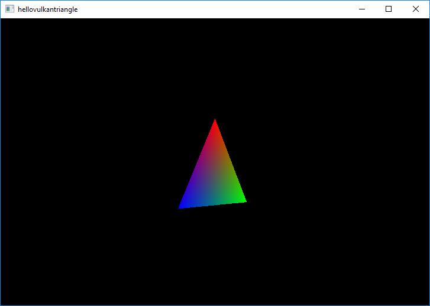

Hello Vulkan Triangle Example
Shows the basics of rendering with QVulkanWindow and the Vulkan API.
The Hello Vulkan Triangle Example builds on hellovulkanwindow. This time a full graphics pipeline is created, including a vertex and fragment shader. This pipeline is then used to render a triangle.

The example also demonstrates multisample antialiasing. Based on the supported sample counts reported by QVulkanWindow::supportedSampleCounts() the example chooses between 8x, 4x, or no multisampling. Once configured via QVulkanWindow::setSamples(), QVulkanWindow takes care of the rest: the additional multisample color buffers are created automatically, and resolving into the swapchain buffers is performed at the end of the default render pass for each frame.
Running the Example
To run the example from Qt Creator, open the Welcome mode and select the example from Examples. For more information, visit Building and Running an Example.